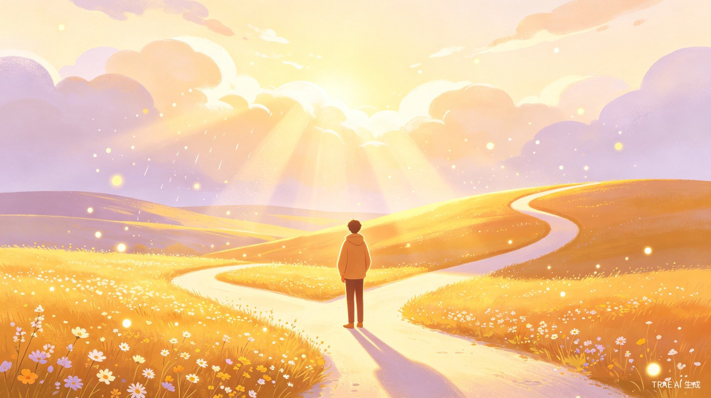
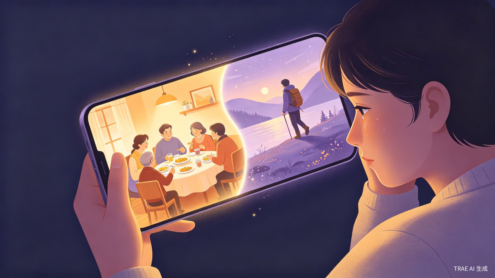

输入你人生中的任何一个关键节点，AI 为你推演另一条岔路上的故事——不是冷冰冰的推演报告，而是一次沉浸式的情感体验。

如果当初去了另一座城市？如果当初选择了另一份工作？如果当初鼓起勇气对那个人说出了那句话？
AI 平行人生 是一个基于 AI 叙事生成的情感体验类产品。用户只需描述一个曾经历过的关键人生节点，AI 会基于用户提供的情境线索，生成两条平行的叙事线——一条是"真实人生"的回溯，另一条是"如果当初做了不同选择"的推演。
产品呈现形式上，它不是一个"问答机器人"，而是一个沉浸式互动故事——以聊天记录、朋友圈、照片时间线、语音日记等多媒介形式，让用户像翻阅另一个自己的数字足迹一样，体验一段"可能的人生"。
本创意聚焦于日常生活中的情感需求，探索 AI 如何让个人记忆与想象以更生动、更有温度的方式被表达和体验。产品核心理念是：每一条路都有风景，重要的不是选哪条路，而是认真走好选择的路，找到当下的意义。
用户通过对话式引导，描述一个关键人生节点——时间、地点、人物、当时的选择、真实结果。AI 以温和的提问帮助用户打开记忆。
AI 基于用户输入，生成两条平行叙事线：真实线（温暖回溯）和 平行线（推演"如果做了不同选择"的可能人生），每条线都有 3-5 个关键场景。
不是纯文本——以聊天记录截图、朋友圈时间线、AI 生成的"照片"、语音日记卡片等形式呈现，让用户像翻阅平行时空的自己一样沉浸。
在体验结束后，AI 生成一张"平行人生感悟卡"——提炼两个选择背后的共同情感线索，帮助用户理解自己真正在意的是什么。
用户可以选择匿名分享自己的"平行人生"故事到公共画廊，浏览他人的"如果当初"——这本身就是一个极具传播力的内容社区。
AI 在这个产品中不是一个"回答问题"的工具，而是一个叙事构建者和情感共鸣者。它需要理解用户的情境，具备创造性叙事能力，同时保持共情和克制——这恰恰是传统开发方式难以实现、而 AI 天生擅长的领域。
刚毕业、换工作、分手、搬家——正在经历重大人生转变的 22-35 岁年轻人。他们处于选择密集期，对"如果当初"有天然的共鸣。
喜欢写日记、回顾人生、自我探索的 25-40 岁用户。他们不是来找"答案"的，而是来体验一种情感共鸣和自我对话。
喜欢在社交媒体上分享有情感深度的内容。平行人生生成的叙事天然具有"传播基因"——每个人都有属于自己的"如果当初"。
面对重大选择时反复纠结、害怕"选错"的用户。体验平行人生不是给他们答案，而是让他们看到：每一条路都有风景，重要的不是选哪条路，而是认真走好选择的路。
| 用户画像 | 核心场景 | 情感驱动 | 预期行为 |
|---|---|---|---|
| 22-28 岁毕业生 | 深夜独处时，回顾"如果当初去了另一个城市" | 怀旧、好奇、自我确认 | 生成后分享朋友圈，引发讨论 |
| 28-35 岁职场人 | 职业倦怠期，想象"如果当初选择了另一条路" | 反思、寻求意义感 | 反复体验不同节点，收藏感悟卡 |
| 25-40 岁内容创作者 | 寻找有情感深度的内容素材 | 创作驱动、社交货币 | 制作"平行人生"系列内容发布 |
| 18-30 岁情绪敏感期 | 刚经历分手/遗憾，想"看看如果当初没分开" | 情感疗愈、告别仪式 | 深度沉浸，可能流泪，但获得释然 |
用户打开产品，看到一句引导语："每个人心中都有一个'如果当初'。你想回到哪个时刻？" 界面简洁温暖，营造安全和私密的氛围。
AI 以温和的提问引导用户逐步描述那个关键节点——"那是什么时候？""当时你在哪里？""你面临的选择是什么？""你最终选择了什么？""结果怎么样？" 整个过程像一次朋友间的深夜聊天。
AI 基于用户输入，生成两条并行的叙事线。每条线包含 3-5 个关键场景，以"朋友圈截图""聊天记录""照片""语音日记"等多媒介形式呈现。用户可以看到"真实线"中的自己，也能看到"平行线"中那个做了不同选择的自己。
用户像翻阅另一个自己的手机一样，滑动浏览两条叙事线的内容。界面设计成时间线风格，配合适度的氛围音乐和过渡动画，营造穿越时空的沉浸感。
体验结束后，AI 生成一张"平行人生感悟卡"，提炼两条叙事背后的情感线索。用户可以保存卡片、匿名分享到公共画廊，或截图分享到社交媒体。

通过"看到另一种可能"，帮助用户与过去的遗憾和解，获得一种"仪式感"的释然，像拨开云雾见阳光。
在两条叙事线的对比中，用户更清晰地看到自己真正在意的是什么，找到当下的意义。
"平行人生"本身就是一个极具分享欲的话题，用户在分享中获得共鸣与连接。
不需要任何技能，只需要"有故事"。每个人都能参与，都能从中获得属于自己的感悟。
"我们不是在建造一个工具，而是在建造一个让每个人都能与自己的过去对话的空间。在这个空间里，AI 不是答案，而是镜子。"
—— AI 平行人生 产品理念
| 对比维度 | 常规工具型产品 | AI 平行人生 |
|---|---|---|
| 产品类型 | 工具型（效率、实用、功能驱动） | 体验型（情感叙事、沉浸式体验） |
| AI 角色 | 辅助者、效率工具 | 叙事构建者、情感共鸣者 |
| 用户情感 | "这东西有用" | "这东西触动了我" |
| 传播力 | 依赖实用价值 | 依赖情感共鸣，天然分享欲 |
| 记忆点 | 功能列表 | 一个故事、一次体验 |
| 竞争壁垒 | 功能可复制 | 情感体验难以复制 |
AI 平行人生 是一个让用户与自己的过去对话的 AI 情感体验产品。 它不追求"有用"，而是追求"有共鸣"； 它不帮用户解决一个具体问题，而是帮用户完成一次与自己的和解。
它想告诉每一位用户：每一条路都有风景，重要的不是选哪条路，而是认真走好选择的路，找到当下的意义。 就像拨开云雾见阳光——AI 不仅是在帮你推演另一种可能，更是在帮你照亮眼前的这条路。